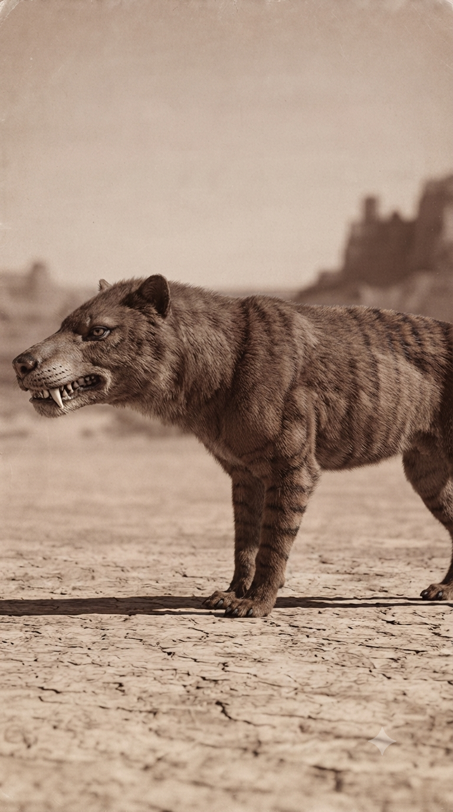
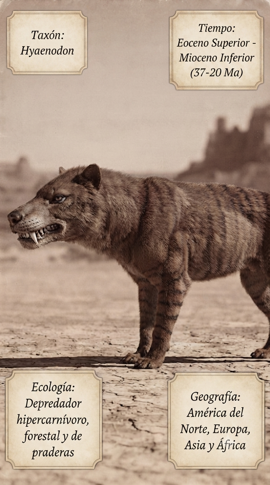
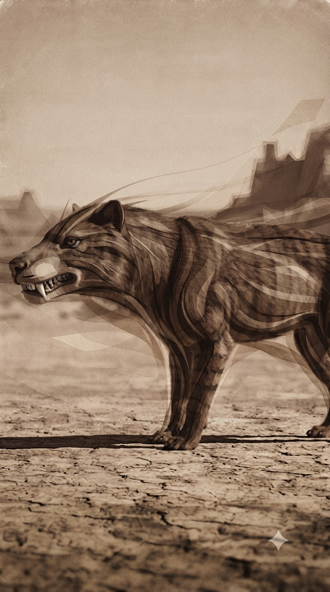
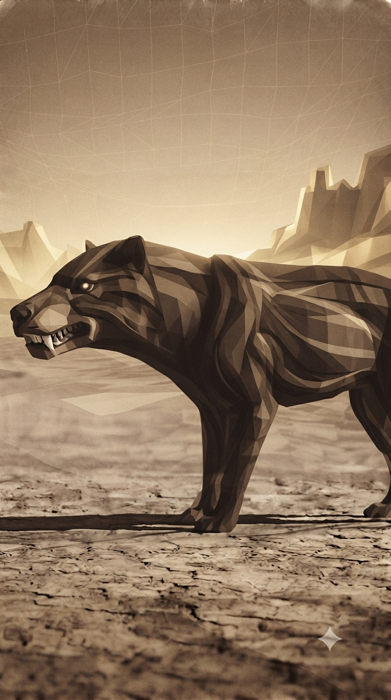

Paleoficha 003_15 de PalEntropía

▶ Haz clic sobre la imagen para ver el Short oficial en YouTube.



TAXÓN: Hyaenodon
CLADO: Mammalia (Mamíferos) / Hyaenodonta / Hyaenodontidae
DIETA: Hipercarnívoro. Depredador especializado en la captura de vertebrados medianos y grandes. Poseía una dentición adaptada al corte de carne mediante piezas carniceras altamente desarrolladas.
TAMAÑO: Variable según la especie. Las formas pequeñas podían rondar pocos kilogramos, mientras que especies gigantes como Hyaenodon gigas o Hyaenodon horridus alcanzaron tamaños superiores a los 300 kg y más de 3 metros de longitud corporal incluyendo la cola.
LOCOMOCIÓN: Terrestre. Presentaba una locomoción principalmente cursorial, adaptada para desplazarse por ambientes abiertos y perseguir presas. Su anatomía combinaba resistencia y potencia, aunque no alcanzaba la especialización de los grandes carnívoros modernos.
TIEMPO: Eoceno Superior - Mioceno Inferior (aproximadamente 41-21 millones de años). Algunas especies sobrevivieron hasta fases posteriores del Mioceno temprano.
GEOGRAFÍA: Amplia distribución en América del Norte, Europa, Asia y África. Sus fósiles se conocen en numerosos yacimientos del Paleógeno y comienzos del Neógeno.
EQUIVALENCIA PALEOGEOGRÁFICA: Habitó continentes con configuraciones diferentes a las actuales, cuando Eurasia, América del Norte y África presentaban conexiones terrestres temporales y ecosistemas dominados por mamíferos arcaicos.
AMBIENTE PALEOECOLÓGICO: Ocupaba bosques abiertos, sabanas primitivas, llanuras arboladas y zonas de transición donde existía una elevada diversidad de mamíferos herbívoros y otros depredadores.
ECOLOGÍA:
- Fauna secundaria: Brontoterios, rinocerontes primitivos, tapires ancestrales, artiodáctilos tempranos, primates arcaicos y otros mamíferos del Paleógeno.
- Nicho ecológico: Gran depredador terrestre. Ocupaba niveles superiores de la cadena trófica, actuando como cazador activo y posiblemente también como consumidor oportunista de carroña.
- Relaciones: Compitió con otros grupos de depredadores mamíferos y ocupó nichos similares a los de posteriores carnívoros placentarios, aunque pertenecía a una línea evolutiva independiente.
ANATOMÍA DESTACADA: Presentaba un cráneo robusto, mandíbulas extremadamente potentes y dientes especializados para cortar tejidos. Sus grandes molares carniceros constituían una de sus principales adaptaciones depredadoras.
CLIMA: Ambientes generalmente cálidos durante gran parte del Paleógeno, con una transición progresiva hacia condiciones más estacionales y áridas durante el Oligoceno y Mioceno temprano.
ESTADO ECOLÓGICO: Extinto. El género desapareció durante el Mioceno temprano, posiblemente debido a cambios climáticos, transformaciones ecológicas y la competencia con nuevos grupos de carnívoros placentarios.